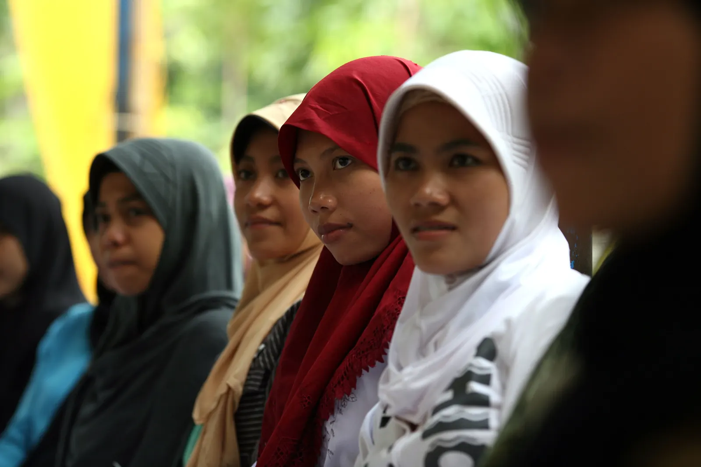
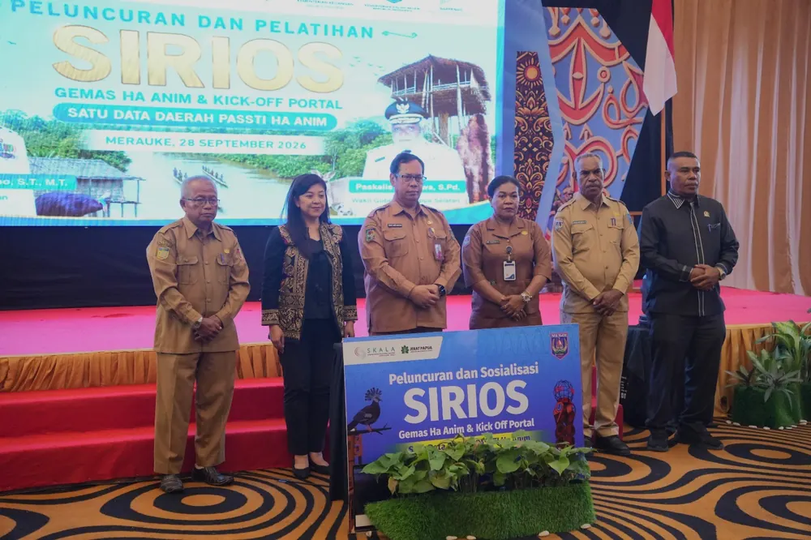
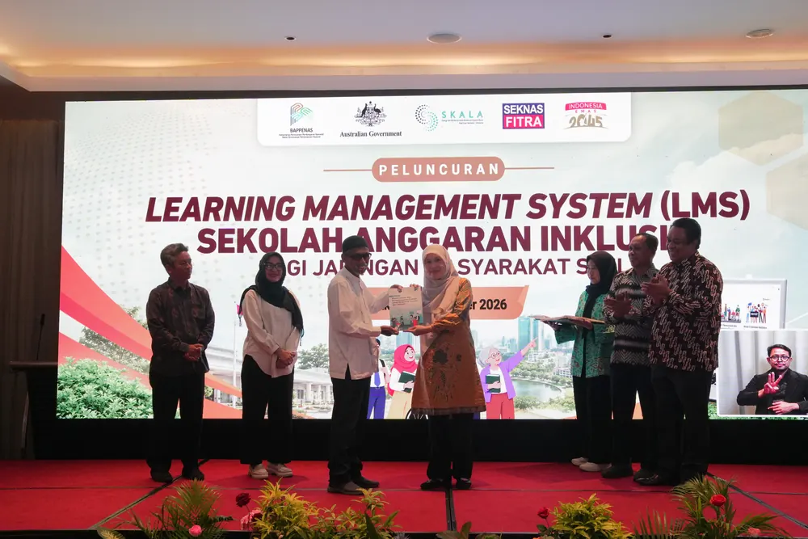

Layanan dasaruntuk setiap wargadari pusat ke daerahyang sampai ke desa
Kemitraan Australia-Indonesia untuk layanan dasar yang sampai ke warga miskin dan rentan.
Ringkasan11 Nov 2026
Dari Pengetahuan ke Pembentukan Kebijakan
Pendekatan ekosistem pengetahuan dalam pembuatan kebijakan berbasis bukti: pelajaran dari Kalimantan Utara.
Baca publikasi

Dari kebijakan menjadi layanan yang dirasakan.
SKALA bermitra dengan Kemendagri, Kemenkeu, dan Bappenas untuk mengurangi kemiskinan dan ketimpangan.
Kami memperkuat perencanaan, penganggaran, dan data agar layanan dasar sampai ke warga miskin dan rentan.
Lihat program
Data & Sistem Informasi untuk keputusan berbasis bukti
Data terkonsolidasi seperti SIKOMPAK dan SEPAKAT membantu pemerintah merencanakan layanan dasar yang tepat sasaran.
Lihat programWilayah kerja
Pilih provinsi untuk melihat fokus program di wilayah tersebut.
Jelajahi wilayah kerja- Provinsi sasaran
- 12
- Capaian akhir dan antara (EOPO, IO)
- 3 dan 9
- Komitmen hingga
- AUD 160 juta
- Durasi program
- 8 tahun
Kegiatan dan Kabar

Papua Barat Daya Luncurkan Portal Cenderawasih untuk Perkuat Perencanaan Pembangunan dan Layanan Dasar

Papua Selatan Perkuat Data dan Perlindungan Sosial bagi Orang Asli Papua
NTB Luncurkan Dashboard Eksekutif untuk Memperkuat Pembangunan Berbasis Data

SEKAR Inklusif: Sistem Manajemen Pembelajaran untuk Memperkuat Partisipasi Masyarakat dalam Pembangunan
“Berkat dukungan SKALA yang memberikan strategi baru untuk perbaikan tata kelola data melalui portal Open Data Aceh, yang ditargetkan 2 tahun dapat rampung dalam kurun waktu 6 bulan.”
 Sayid AzharyKepala UPTD Statistik Diskominfo dan Sandi Provinsi Aceh
Sayid AzharyKepala UPTD Statistik Diskominfo dan Sandi Provinsi Aceh“Terbukti dengan bantuan SKALA, capaian SPM Provinsi NTT sudah mulai membaik. Hal ini merupakan bukti nyata pentingnya dukungan Kemitraan Pemerintah Australia melalui SKALA.”
 Kosmas Damianus LanaSekretaris Daerah Provinsi NTT
Kosmas Damianus LanaSekretaris Daerah Provinsi NTT“Terima kasih atas kerja keras SKALA yang telah memberikan pendekatan dan dukungan program dalam pengembangan dan optimalisasi pemanfaatan Satu Data Kaltara, sehingga menjadi lebih sistematis dan efektif.”
 Bertius, S.Hut. TPlt. Kepala Bappeda dan Litbang Provinsi Kalimantan Utara
Bertius, S.Hut. TPlt. Kepala Bappeda dan Litbang Provinsi Kalimantan UtaraPengetahuan untuk layanan yang lebih baik
Laporan, ringkasan kebijakan, dan pembelajaran dari kerja bersama di 12 provinsi.

Pusat Pengetahuan
Cerita dari lapangan: mendorong penganggaran pemerintah pusat yang lebih responsif terhadap tantangan geografis daerah.
Semua publikasi
Siniar Kami
Seri Podcast Harian Kompas: Isu Lanjut Usia Hantui Indonesia?
Siniar lainnya